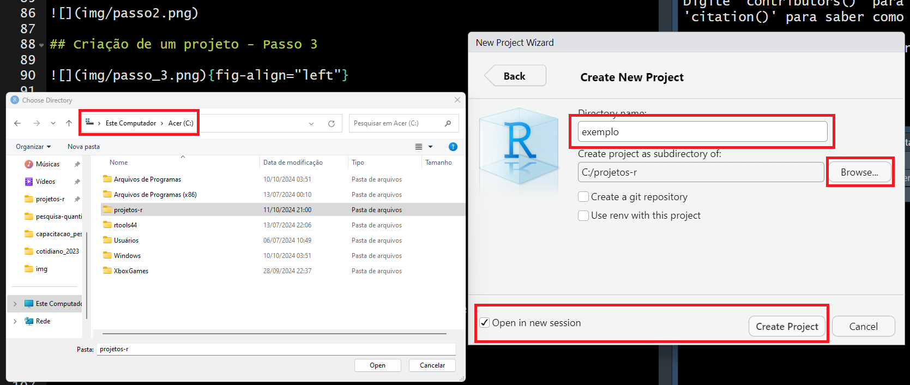
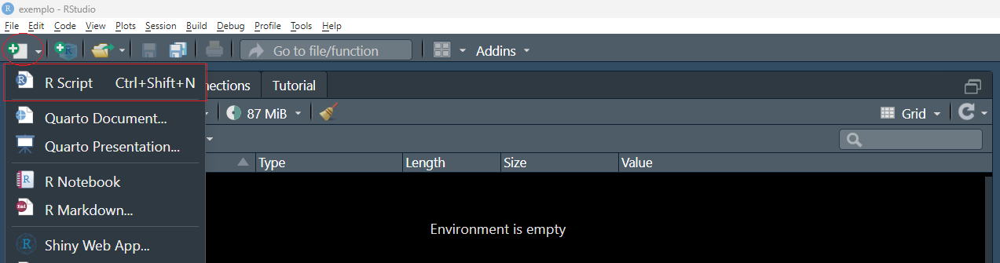
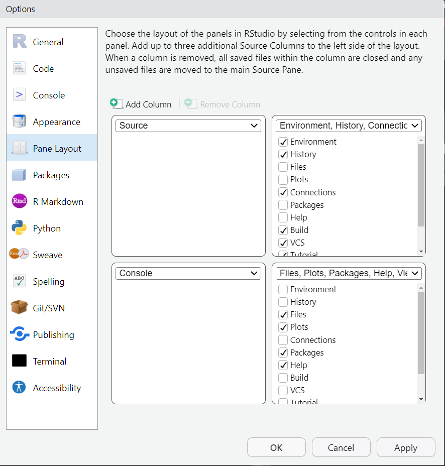
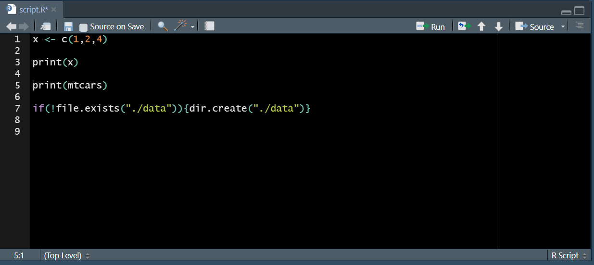
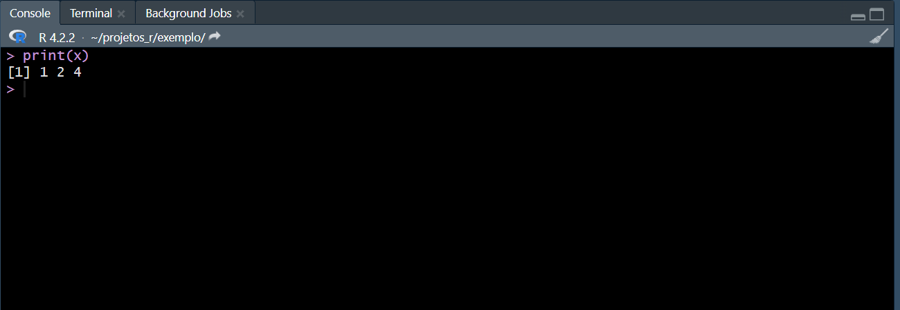
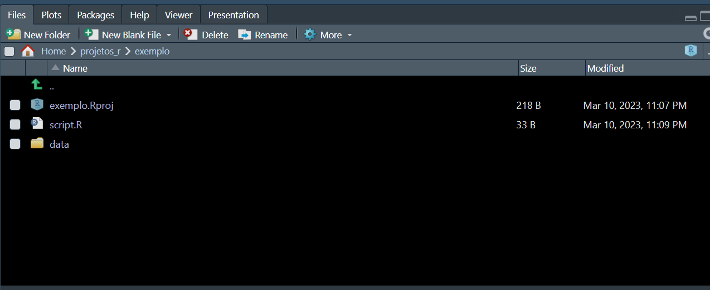
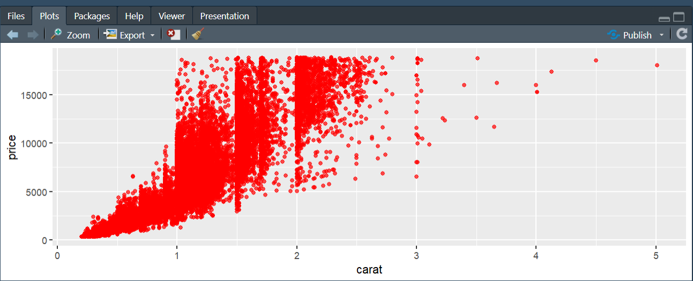
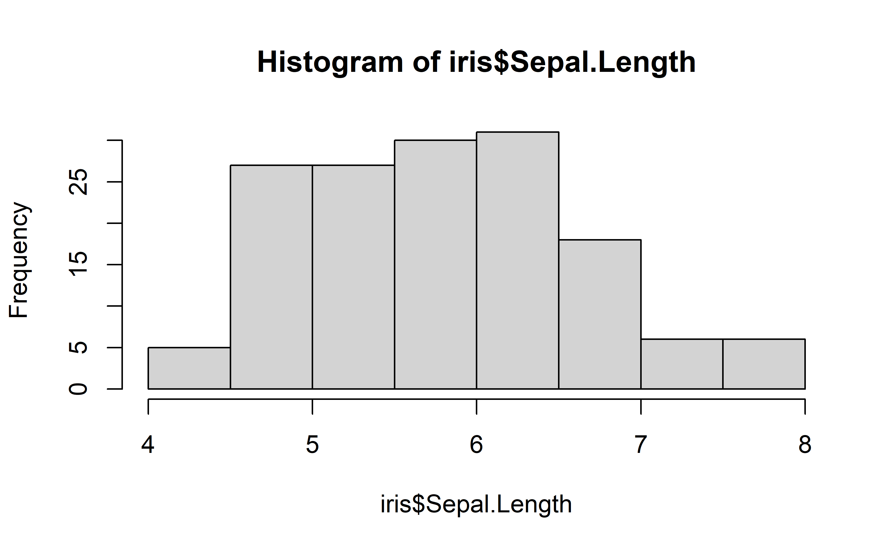
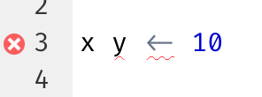

03:00
Introdução ao R
Fluxo de trabalho: projetos, scripts e pacotes
Projetos
Para que servem os projetos?
Organização do trabalho: permitem manter todos os arquivos relacionados (scripts, dados, resultados) em uma única pasta, facilitando o gerenciamento
Retomada fácil: facilitam o retorno à análise em outro momento, mantendo o ambiente configurado e os arquivos acessíveis
Múltiplas análises simultâneas: ajudam a separar diferentes projetos, evitando confusão entre análises distintas
Fluxo de dados: simplificam a importação de dados externos e a exportação de resultados e gráficos para uso fora do R
Para que servem os projetos?
Fonte da verdade: estabelecem um registro duradouro e consistente do trabalho realizado, essencial para reprodutibilidade
Colaboração: facilitam o compartilhamento e a colaboração com outros, mantendo uma estrutura de projeto clara e organizada
Ambiente isolado: garantem que as configurações e pacotes usados no projeto não afetem outros trabalhos, evitando conflitos
Reprodutibilidade: ajudam a garantir que a análise possa ser replicada no futuro ou por outras pessoas, mantendo todos os componentes necessários juntos
Criação de um projeto - Passo 1

Criação de um projeto - Passo 2

Criação de um projeto - Passo 3

Dica
- É muito importante que todos os arquivos do projeto fiquem dentro de uma mesma pasta
- A pasta “raiz” não pode conter caracteres especiais
- Sugestão: crie uma pasta projetos-r dentro da pasta “C:” do Windows e, dentro dela, crie sub pastas para cada projeto
Criação de um projeto - Passo 4

E você vai chegar aqui

Scripts
Editor de scripts
- O console é um bom lugar pra começar, mas pode ficar apertado
- Códigos mais longos precisam de mais espaço
- Quando quiser mudar algo, não precisa digitar tudo de novo
- Apenas edite o script e execute novamente
- Salve um arquivo de script para retornar facilmente mais tarde
Editor de scripts
Para abrir um script use Ctrl + Shift + N ou faça como nas imagens


Paineis do R Studio

Ajuste dos paineis

Source Code
É onde o código é escrito. Vários tipos de arquivos podem ser utilizados: Scripts, Rmarkdown, Quarto etc.

Console
Mostra a saída do que é feito no source code. Também pode ser usado para escrever códigos, mas não é possível salvá-los

Environment/History

No environment estão os diversos objetos que são criados pelo código: vetores, dataframes (bancos de dados), tibbles etc.
File/Plots/Packages/Help
Neste painel são mostrados os arquivos do projeto, os gráficos produzidos, a ajuda e informações sobre os pacotes (instalar, ativar, desativar etc).

File/Plots/Packages/Help

Cheat Sheets
Execução de códigos no script
- Coloque o cursor onde quer executar e pressione Ctrl + Enter ou
- Clique em Run

Execução de códigos no script
Ao executar um bloco de código com Ctrl + Enter, o cursor se move para o próximo bloco
Isso facilita a execução do script completo pressionando repetidamente Ctrl + Enter
Exercício
- No Script que foi criado:
- Use a função
data()para ver bancos de dados disponíveis no R - Escolha um banco de dados que tenha uma variável numérica
- Você seleciona uma variável num banco usando
$:banco_de_dados$variavel
- digite
banco_de_dados$e pressione TAB para as variáveis disponíveis - Gere um histograma (
hist()) com a variável numérica escolhida
- Use a função
Resposta
hist(iris$Sepal.Length)
Execução de códigos no Script
- Você também pode rodar todo o código com
- Ctrl + Shift + S (sem echo1)
- Ctrl + Shift + Enter (com echo)
- Fazer isso regularmente garante que você capturou todas as partes importantes do seu código no script
Diagnósticos RStudio
No editor de script, o RStudio destacará erros de sintaxe com uma linha vermelha ondulada e uma cruz na barra lateral:

Passe o mouse sobre a cruz para ver qual é o problema:

O RStudio também informará você sobre possíveis problemas:

Salvando e nomeando
- O RStudio salva automaticamente o conteúdo do editor de scripts quando você sai e o recarrega automaticamente quando você o reabre
- Evite Untitled1, Untitled2, Untitled3
- Salve seus scripts e dê a eles nomes informativos
Orientações para os nomes dos arquivos
- Os nomes de arquivo devem legíveis por máquina:
- Evite espaços, símbolos e caracteres especiais
- Não confie na diferenciação entre maiúsculas e minúsculas para distinguir arquivos
- Os nomes de arquivo devem ser legíveis por humanos:
- Use nomes de arquivo para descrever o que há no arquivo
- Comece os nomes de arquivo com números para que a classificação alfabética os coloque na ordem em que são usados
Quais os problemas com esses nomes?
modelo alternativo.R
código para análise exploratória.R
relatoriofinal.qmd
RelatorioFinal.qmd
fig 1.png
Figura_02.png
modelo_primeira_tentativa.R
rodar-primeiro.R
temp.txt- É difícil encontrar qual arquivo executar primeiro
- Os nomes dos arquivos contêm espaços
- Há dois arquivos com o mesmo nome, mas com capitalização diferente
- Alguns nomes não descrevem o conteúdo dos arquivos
Um jeito melhor de nomear e organizar os arquivos
01-carregar-dados.R
02-analise-exploratoria.R
03-modelo-1.R
04-modelo-2.R
fig-01.png
fig-02.png
relatorio-20-03-2024.qmd
relatorio-02-04-2024.qmd
relatorio-rascunho.txt- Numerar os scripts principais torna óbvio em que ordem executá-los
- Um esquema de nomenclatura consistente torna mais fácil ver o que varia
- As figuras são rotuladas de forma semelhante
- Os relatórios são diferenciados por datas incluídas nos nomes dos arquivos
- temp é renomeado para relatorio-rascunho para descrever melhor seu conteúdo
Dica
Se você tem muitos arquivos em um diretório, é recomendável levar a organização um passo adiante e colocar diferentes tipos de arquivos (scripts, figuras, etc.) em diretórios diferentes
Qual a fonte da verdade?
- Como iniciante, é comum depender do environment para armazenar os objetos criados durante a análise
- Contudo, para facilitar trabalhos maiores ou colaboração, seus scripts R devem ser a fonte de verdade
- Com seus scripts e arquivos de dados, você pode recriar todo o ambiente facilmente
- Ao depender apenas do environment, é difícil recriar os scripts:
- Terá que reescrever código de memória, cometendo erros
- Ou precisar vasculhar o histórico do R cuidadosamente
Não preservar o workspace
- Recomenda-se configurar o RStudio para não preservar o workspace entre as sessões:
- Execute usethis::use_blank_slate() no início do código ou
Não preservar o workspace
Ajuste as opções nas configurações do RStudio

A casa do seu projeto
getwd()
#> [1] "C:/projetos-r/pesquisa-quanti-psi-ufc/materiais_do_curso/slides/introducao-r"Salvando o seu projeto
- Digite o código abaixo no editor de script do RStudio
- Salve o arquivo com o nome “carros.R”
- Crie uma nova pasta chamada “data”
- No RStudio, vá ao painel Files e clique no botão “New Folder”
- No RStudio, vá ao painel Files e clique no botão “New Folder”
- Execute todo o script que você escreveu
- O script irá salvar um arquivo PNG e um arquivo CSV no diretório do seu projeto
Fechando e reabrindo o RStudio
- Saia do RStudio completamente
- Inspecione a pasta do projeto:
- Navegue até a pasta associada ao seu projeto
- Observe o arquivo com extensão .Rproj
- Reabra o projeto:
- Dê um duplo clique no arquivo .Rproj para reabrir o projeto no RStudio
- Você retornará ao mesmo diretório de trabalho e histórico de comandos
- Todos os arquivos em que estava trabalhando continuam abertos
- Como configurado anteriormente, o ambiente estará completamente limpo
Localizando arquivos gerados e scripts
- Buscar arquivos no computador:
- Use o método de busca do seu sistema operacional para procurar por carros.png
- Você encontrará o arquivo de imagem carros.png.
- Além disso, encontrará o script que o gerou (carros.r).
Pacotes (packages)
O que é um pacote?
- Coleção de funções, objetos e documentação
- Estendem as capacidades do R e adicionam novos recursos
- Criados pela comunidade
Como instalar um pacote
install.packages("tidyverse")- Só precisa ser feito uma vez
- Não coleque a instalação dos pacotes no script
- Se o arquivo for compartilhado, não é legal modificar as configurações de outra pessoa
Como carregar o pacote
- Precisa ser feito em cada novo script
- A cada novo uso do script
- Colocar todos os pacotes no início do script
Como obter informações sobre as funções do pacote
Exercício
02:00
Instale os seguintes pacotes: tidyverse, car e psych
Resposta
install.packages("tidyverse")
install.packages("car")
install.packages("psych")Exercício
02:00
Carregue os pacotes que foram instalados anteriormente
Resposta
Notas de rodapé
Ver o que o código faz↩︎